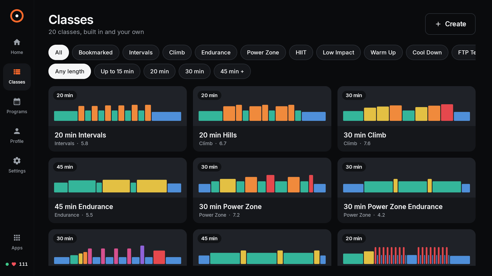
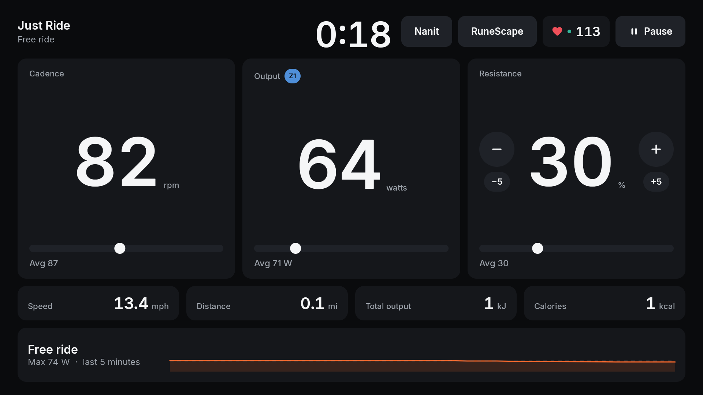

Open-source Peloton Bike+ app · MIT
Custom workouts, automatic resistance, and live metrics on the bike you already own.
Bike+ tablet · Apple Watch · Android + watchOS
Get the source

Example screens captured on a clean Bike+ tablet emulator. No personal ride data is shown.
A focused app for the Bike+ tablet, with your workouts and your data.
Use the built-in library, create a workout on the tablet, or import a compatible JSON or ZWO file.
Structured segments can guide resistance, while ERG mode holds a selected power target.
Cadence, power, resistance, speed, distance, and ride history stay easy to read from the saddle.
Send Watch heart rate directly to the tablet over Bluetooth, or pair another compatible heart-rate strap.
Use supported video rides and media controls alongside a workout, with optional app overlays.
Pelojack controls the bike through its on-device service. It does not need a Peloton account or cloud API.
Pelojack keeps workout plans and ride history on the tablet and has no Pelojack cloud account or analytics. Apple Watch can save workouts to Apple Health when you allow it. Video, music, and camera features contact the services you choose. Cable-free maintenance is optional and uses a token-authenticated server on your home network.
Privacy details →Built for one bike, designed to be useful to its owner.
Pelojack turns the Bike+ tablet into a flexible ride console for custom workouts, power targets, heart rate, and your own media.
Install the app on a Bike+ you own, set it as the home screen, and start with the built-in workout library. The source is public under the MIT License.
| Target | Peloton Bike+ tablet, tested on Android 10 |
| Tablet app | Kotlin · Jetpack Compose |
| Watch app | Swift · SwiftUI · watchOS |
| Bike link | Local tablet service · Bluetooth heart-rate link |
| Workouts | Built-in plans · JSON · Zwift ZWO |
| License | MIT |
Local bike control. Core resistance and sensor communication stay between Pelojack and the Bike+ tablet. Core rides do not depend on a Pelojack server.
A direct Watch path. Apple Watch sends heart rate to the bike over Bluetooth. The iPhone is used to install the Watch companion, not to relay live ride data.
Opt-in maintenance. The USB install works without a network server. Restart-persistent updates are a separate option with a token-protected local-network service, described in the setup guide.
Clear limits. Pelojack is unofficial and depends on an undocumented Bike+ service, which firmware updates may change.
Yes. Pelojack is an open-source ride app for the Bike+ tablet, released under the MIT License with its source on GitHub. It runs on the bike's Android tablet and pairs with an Apple Watch companion.
Pelojack's core rides do not need a Peloton account or cloud API, because it controls the bike through the tablet's local bike service. It is an independent project, and Peloton firmware updates can change that service and may break compatibility.
Yes. Pelojack includes a built-in workout library, lets you create a workout on the tablet, and imports compatible JSON or Zwift ZWO files. Structured segments can guide resistance, and ERG mode holds a selected power target.
Yes. The Pelojack Apple Watch app reads your heart rate and sends it directly to the bike over Bluetooth. The iPhone is only used to install the Watch app, and other compatible heart-rate straps can be paired too.
No. Pelojack is independent and is not made, approved or supported by Peloton. Peloton and Bike+ are trademarks of Peloton Interactive, Inc.
You enable USB debugging on the bike tablet, connect it to a Mac and run the setup script from the repository. The script builds and installs Pelojack and sets it as the home screen, and a restore script returns the previous home app. Use it only on a bike you own or are authorized to configure.
No. Workout plans and ride history stay on the tablet, and there is no Pelojack cloud account or analytics. Apple Watch can save workouts to Apple Health only when you allow it.
Read the setup steps, inspect the source, and build Pelojack for your Bike+.
Open the GitHub repo